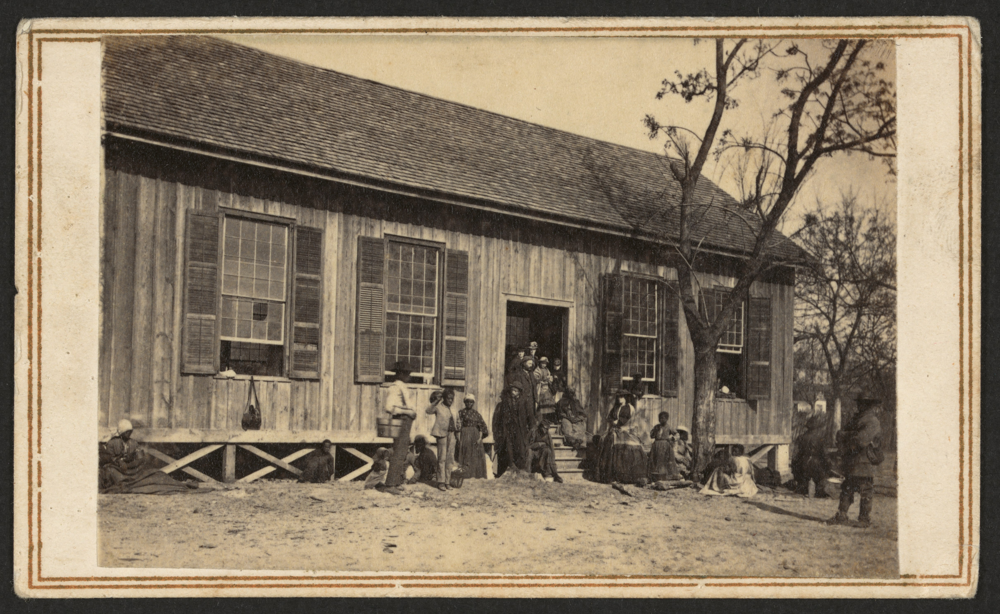

Directions: Read the full text, then answer the questions at the end.
In January 1865, days after Black ministers in Savannah told Secretary of War Edwin Stanton that land of their own was how freedpeople could best take care of themselves, General William T. Sherman issued Special Field Orders No. 15. The order reserved the Sea Islands and a coastal strip of South Carolina, Georgia, and Florida, some four hundred thousand acres, for settlement by freed families, in plots of not more than forty acres each. Army officers issued possessory titles, lent army mules to some settlers, and by the summer some forty thousand freedpeople were farming land they expected to keep. The phrase forty acres and a mule entered American speech from this settlement.

The settlement lasted months, not years. President Andrew Johnson's restoration program pardoned the land's former owners and ordered their property returned, and Freedmen's Bureau commissioner O. O. Howard came to Edisto Island in the fall of 1865 to tell the settlers themselves. The Edisto freedpeople answered with the petition this lesson's activity reads again: they had made these lands what they are, they had been the only loyal people in possession of them, and they asked only that every Black man be allowed to purchase land and hold it as his own. The land went back anyway. Thaddeus Stevens argued in Congress that the great planters' estates should be confiscated and divided among freed families, and Congress defeated the plan. The Southern Homestead Act of 1866 opened public land in five southern states, but the acres were mostly poor and few families gained farms from it.
Without land, most freed families worked land owned by others, and the terms were fought over from the first harvest. Planters wanted the old gang system, squads laboring under an overseer from sunup to sundown for wages paid at year's end. Freedpeople refused it. They wanted family plots they could work at their own pace, and many women withdrew from field labor to work in their own households and raise their children, a use of freedom planters called idleness. The Bureau's yearly labor contracts, signed under an agent's eye, disciplined workers and protected wages on paper, and each side broke them when it could. Out of that standoff came the compromise nobody had chosen on purpose.
Sharecropping spread across the cotton South because it gave each side part of what it demanded. A family farmed a plot of a landowner's land, with its own labor and often its own mule, and at harvest paid the owner a share of the crop, commonly half, in place of rent or wages. The landowner escaped paying cash wages he did not have, and the family escaped the overseer and the gang. Settlements came once a year, when the crop was sold, the accounts were read, and the family's share was divided against what it owed. Between settlements the family had to eat, and it ate on credit.
The crop lien financed the system and trapped it. A furnishing merchant, or the landowner acting as one, advanced seed, tools, food, and clothing against a legal claim on the crop before it was planted. The merchant set the prices of what he advanced, charged credit prices well above cash prices, and took interest on the account, while the crop itself was valued at whatever the settlement said it was worth. A family whose share fell short at settlement began the next year deeper in debt, planting cotton because cotton was the only crop a merchant would advance against. A poor harvest or a disputed account renewed the debt, year after year, on land the family did not own.
What freedpeople built with their own hands stood on ground they did own. From 1865 they taxed themselves, raised money at fairs and in churches, bought lots, and built schoolhouses across the South, often before they built churches, filling them with children and with adults learning to read after work. Northern missionary societies and the Freedmen's Bureau helped, and the teachers were Black men and women and northern teachers, many of them women. By 1870 the freedmen's schools enrolled some quarter of a million students. Beside the schools, freed families saved. The Freedmen's Savings Bank, chartered by Congress in March 1865, took the deposits of Black soldiers and tens of thousands of families, savings scraped from wages and garden plots. Speculation by its managers and the Panic of 1873 brought the bank down in 1874, and its depositors lost much of what they had saved.
The churches gave the building a permanent address. The African Methodist Episcopal Church, an independent Black denomination organized in Philadelphia in 1816, carried its congregations across the South by the thousands after emancipation, while independent Black Baptist congregations multiplied on their own. A church was often the first property a Black community owned outright. Its meetinghouse served as a schoolhouse on weekdays, a Union League hall on meeting nights, and the organizing ground of the new politics, and its minister often doubled as a teacher or an officeholder. The lesson's verdict is doubled. A people freed with almost nothing built schools, churches, and savings at speed, institutions that outlasted Reconstruction itself. They built them on an economic base the land settlement had denied them, renting the ground under their labor from the men who had owned them, and paying for freedom's institutions out of shares of crops they did not fully control.
1. State what Special Field Orders No. 15 did, naming its date, the land it reserved, the largest plot a family could receive, and the number of freedpeople settled under it by the summer of 1865.
2. State how the land settlement was undone, naming Johnson's part in it, the Edisto petitioners' two grounds for keeping the land, the fate of Stevens's confiscation plan, and what the Southern Homestead Act delivered.
3. State the labor fight and the compromise it produced, naming the system planters wanted, two things freedpeople refused or withdrew, and then sharecropping's basic terms, the share commonly paid and when accounts were settled.
4. Work the crop lien's arithmetic in order, naming what the furnishing merchant advanced, the legal claim he held, who set the prices and interest, and two reasons a family's debt renewed itself at settlement.
5. In a short paragraph, answer the lesson question from the reading. State what freedpeople built, naming the schools' enrollment by 1870, the churches' uses, and the Freedmen's Savings Bank's fate, and state what the land settlement they never got cost what they built.
1. State what the order did. General William T. Sherman issued Special Field Orders No. 15 in January 1865. It reserved the Sea Islands and a coastal strip of South Carolina, Georgia, and Florida, some four hundred thousand acres, for settlement by freed families in plots of not more than forty acres each. Army officers issued possessory titles and lent army mules to some settlers, and by the summer some forty thousand freedpeople were farming the reserve. The phrase forty acres and a mule entered American speech from this settlement.
2. State how the settlement was undone. President Andrew Johnson's restoration program pardoned the land's former owners and ordered their property returned, and Commissioner O. O. Howard carried the news to Edisto Island in the fall of 1865. The petitioners answered on two grounds: labor, they had made these lands what they are, and loyalty, they had been the only loyal people in possession of them; they asked that every Black man be allowed to purchase land and hold it as his own. The land went back anyway. Thaddeus Stevens's plan to confiscate the great planters' estates and divide them among freed families was defeated in Congress, and the Southern Homestead Act of 1866 opened mostly poor public acres from which few families gained farms.
3. State the labor fight and the compromise. Planters wanted the old gang system, squads laboring under an overseer for wages paid at year's end. Freedpeople refused gang labor, demanded family plots worked at their own pace, and many women withdrew from field labor to their own households. The Bureau's yearly contracts held the standoff on paper. Sharecropping was the compromise: a family farmed a plot of a landowner's land and at harvest paid the owner a share of the crop, commonly half, in place of rent or wages, with accounts settled once a year when the crop was sold.
4. Work the lien's arithmetic. The furnishing merchant, or the landowner acting as one, advanced seed, tools, food, and clothing against a legal claim, the crop lien, on the crop before it was planted. The merchant set the prices of what he advanced, charged credit prices well above cash prices, and took interest on the account, and the crop was valued at whatever the settlement said it was worth. Debt renewed itself because a family whose share fell short began the next year deeper in debt, and because a poor harvest or a disputed account added the shortfall to the new year's account, while the lien required planting cotton, the only crop a merchant would advance against.
5. Answer the lesson question from the reading. Freedpeople built freedom's institutions at speed. They taxed themselves, bought lots, and built schoolhouses, enrolling some quarter of a million students by 1870, taught by Black teachers and northern teachers under Bureau and church sponsorship. Their churches, the AME congregations carried across the South by the thousands and the independent Baptist congregations beside them, were often the first property their communities owned outright, and their meetinghouses served as schoolhouses, league halls, and the organizing ground of the new politics. They saved in the Freedmen's Savings Bank until speculation and the Panic of 1873 brought it down in 1874 and cost depositors much of what they had saved. The land settlement they never got cost all of this its economic base: the institutions stood on shares of crops grown on other men's land, under liens other men held.